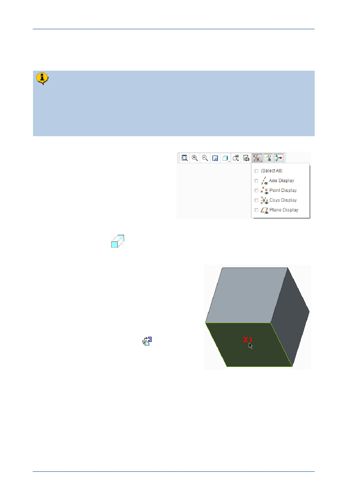

PTC Academic Program
Step 5: Extrude the first hole
Instead of adding material, the extrude tool can also be used to remove material,
in this case we use an extruded cut that is shaped like a circle.
This extrude feature will be created by sketching an 8 mm diameter circle on the
front face of the cube. The extrude will remove material and intersect the entire
cube.
1. If necessary, use the Graphics toolbar
to disable the display of all datum
features.
2. Starting an Extrude (sketch based) feature and defining the sketch plane:
Start the Extrude
tool from the Shapes group of the Model tab.
3. Starting an internal sketch:
Press CTRL + D to reorient the model.
In the graphics area, click to select the front
face of the cube X1, as the sketch plane.
The Sketch tab will open and you will be
able to start sketching immediately.
To make sketching easier while you are
learning, click Sketch View
from the
Graphics toolbar; this will reorient the sketch
plane parallel to the computer screen.
© 2012 PTC
Creo Parametric 2.0 Primer
Page 25